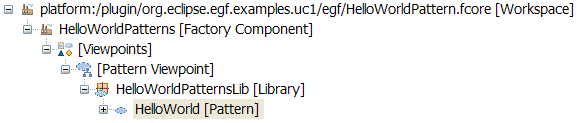
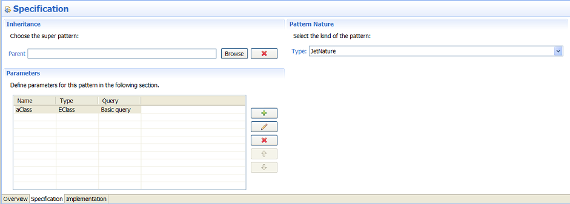
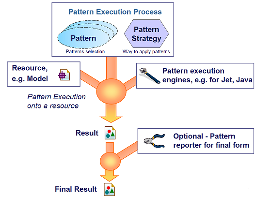

EGF Tutorial - Pattern. First steps. |
This tutorial explains how to create and execute simple patterns with EGF. A pattern is a solution to a recurrent problem. A pattern is based on a language, for instance Jet for model-to-text transformations. The pattern technique allows pattern inheritance, delegation to other patterns in order to elaborate reusable and customizable generation solutions.
Pattern organization. Patterns are organized by pattern libraries. A pattern library contains a set of patterns.
Pattern nature. A pattern nature indicates which language the pattern implementation conforms to (e.g. Java, Jet).
Pattern views. A pattern is visualized with three different folders: 1) Overview, 2) Specification which represents the external view of a pattern, 3) Implementation which represents the internal view of a pattern and where the pattern is implemented.
The sequence of actions to create a pattern:
Create a pattern with the Jet nature.

Figure 1. Example of new pattern
Specification view. This view enables to set 1) the super-pattern of the current pattern for pattern inheritance, 2) the pattern nature already set during the pattern creation, 3) the pattern parameters.
Pattern query and parameter. The pattern applies queries over a resource that the pattern consumes, for instance a model. Each query record is successively associated to a parameter. This record is processed by the pattern implementation.
Pattern query. EGF proposes a default query. The query list is extensible.
Pattern parameter. The pattern type is either a class defined in an ecore model or a Java type (class or interface).
The sequence of actions to define pattern parameters and their query:
Create an EClass parameter. The default name of a pattern parameter is parameter. In the example, it is renamed aClass. The default is empty but it corresponds to the Domain query.

Figure 2. Pattern Specification View
Implementation view. This view enables to define pattern methods, the method orchestration, and local variables.
Pattern methods. Four methods are predefined: header, init, preCondition and footer. Header is used for instance to declare the Jet declaration or the import in Java, init for the initialization of local variables (cf. explanation below), preCondition to filter records onto a query result. The user creates as many as methods s/he wants to implement the pattern. Each pattern method contents is supposed to conform to the pattern nature, for instance Jet-based code.
Pattern method orchestration. The method orchestration defines the order to call available methods and patterns: methods local to the current pattern, methods from the super-patterns, pattern call with parameter context passing, pattern call with injection.
Pattern variables. The pattern variables are accessible by any method of the current pattern. The type is either a class defined in an ecore model or a Java type (class or interface). Pattern variables can be initialized in the init method, update and used in the pattern methods.
Precondition. A pattern is applied over a resource. The precondition body in written in Java, returns a boolean, and selects whether the current record for resource query is applicable or not.
Header. The header is an header for generation. In Jet, it is used to set general parameters, such the package where Java classes are generated, the imports.
The sequence of actions to manage the implementation methods:
The sequence of actions to manage variables:
The sequence of actions to manage the method orchestration:
As explained in section 5 (Pattern translation), the pattern is translated to be executed. Save (Ctrl-s) the pattern method and the pattern to have the pattern translated.
Implement the default body method. Add the following Jet code:
Hello <%= aClass.getName() %>!
Drag and drop the method in the pattern orchestration part.
The following figure depicts how patterns are applied onto a domain resource.

Figure 3. Pattern Execution
Pattern strategies. A pattern strategy indicates how to navigate over a resource and how to apply patterns. For instance, a pattern-oriented strategy successively applies a set of patterns onto a resource; on the contrary, a model-oriented strategy applies a set of patterns successively onto each model element. Those two strategies are proposed by default with EGF.
Tasks to execute patterns. A task must be introduced in order to put in action all the elements described. This task must know:
Domain resource. Patterns are applied onto a resource, such as a domain model.
Pattern execution engines. Patterns have a nature (e.g., Jet, Java). Then, at execution time, an engine executes a pattern according its nature. On the pattern flow, different pattern execution engines can be activated.
Reporter. A reporter is responsible for the rendering and persistence of the pattern results. It is typically useful for model-to-text transformation. Each pattern provides an output result that must be consolidated in one or several files. A reporter serves to report the result of the pattern implementation, for instance on the console or in a file.
A task is used to execute a pattern or a set of patterns. This task must know: 1) the domain model, 2) the pattern or pattern library list, 3) the pattern strategy, and 4) the reporter. This tutorial uses the Model-driven pattern strategy. The use of pattern reporter is explained below.
The sequence of actions to create a task for pattern execution:
Create a pattern task invocation as described above. Example of domain: platform:/plugin/org.eclipse.egf.model/model/Fcore.ecore.
Finally, execute the factory component. The output is displayed on the console. The last line sums up all the previous lines.
Patterns to be compiled are compiled when a pattern is saved. Errors may be raised and, as a consequence, the pattern execution would fail. Then:
Reporter class. A reporter is a Java class which implements the PatternExecutionReporter class.
Collecting the result. There are two methods to collect the execution result of one pattern: 1) the loopFinished method collects the result for one pattern and for one query tuple, 2) the executionFinished method collects the result for one pattern, which is the aggregation of the loopFinished method results.
Reporting the result. The result is generally reported in with the selected media, e.g. a file.
For more complex reports, refer to the org.eclipse.egf.emf.docgen.html plug-in which examplifies the case of result in a file and a specific folder.
1. Create a reporter Java class like this one:
Package org.eclipse.egf.examples.uc1.reporter;
import java.util.Map;
import org.eclipse.egf.core.EGFCorePlugin;
import org.eclipse.egf.model.pattern.PatternContext;
import org.eclipse.egf.model.pattern.PatternExecutionReporter;
public class MyReporter implements PatternExecutionReporter{
public void executionFinished(String output, PatternContext context) {
// Message on the default console
System.out.println("=> Result of pattern:\n"+output);
// Message on the EGF console
EGFCorePlugin.getDefault().logInfo("=> Result of pattern:\n"+output);
}
public void loopFinished(String output, String outputWithCallBack,
PatternContext context, Map<String, Object> parameterValues) {
// TODO Auto-generated method stub
}
}
2. Complete the task with the reporter parameter:
The pattern contents is translated into an executable form. This takes into account pattern inheritance and other pattern mechanisms not explained in this tutorial (e.g., pattern call). Next, at execution time, a pattern engine, specific to the pattern nature, executes a pattern.
Patterns are translated on the fly. One case requires to manually force pattern rebuild: pattern inheritance. Indeed, children are not notified that a super-pattern in the hierarchy is update. To force this translation: